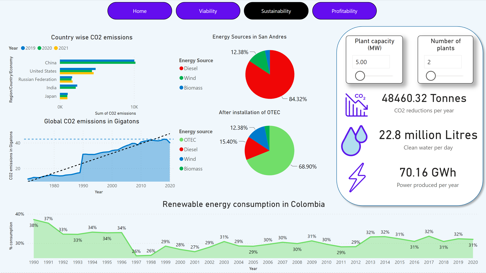

Close
Ocean Technology dashboard


Project Details
This is a dashboard I have developed as part of my master thesis at Trinity College Dublin. This dashboards is about a technology which converts the temperature difference of the ocean layers to electricity. Having huge potential in the future. The dashboard talks about viability in terms of feasible conditions, sustainability in terms of clean energy and drinking water and lastly the investment required based on capacity of the plant and the return on investment.
The bathymetric data was downloaded from GEBCO, manipulated in python and QGIS and then visualised in Power BI. The dashboard also takes user inputs for the capacity of plant and number of plants to get an estimate of how much clean water and energy could be produced.
 Tableau
Tableau
 Azure Databricks
Azure Databricks